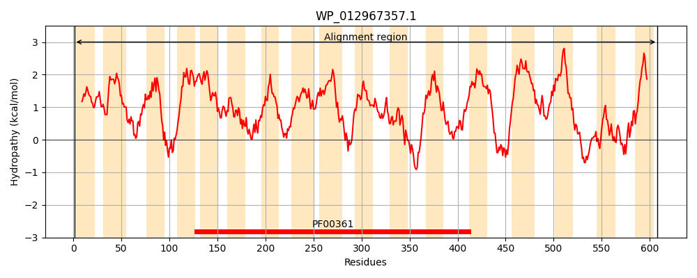
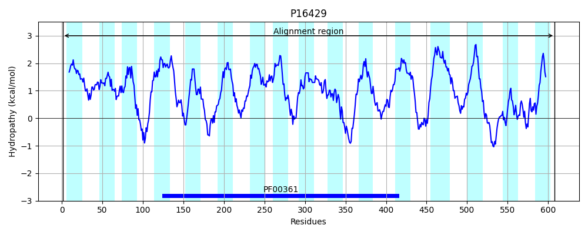
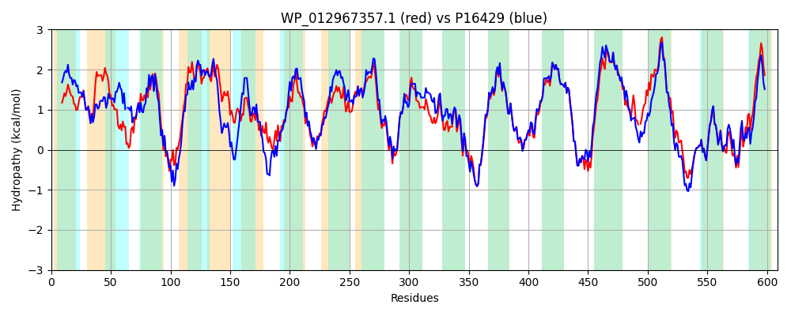

Hit Accession: P16429
Hit TCID: 3.D.1.9.2
Hit Description: gnl|BL_ORD_ID|9215 gnl|TC-DB|P16429|3.D.1.9.2 Formate hydrogenlyase subunit 3 OS=Escherichia coli (strain K12) GN=hycC PE=3 SV=2
Mach Len: 609
e:0.000000
Query TMS Count : 17
Hit TMS Count: 16
TMS-Overlap Score: 14.250000
Predicted Substrates:CHEBI:5584;hydron
BLAST Alignment:
Score: 2217 , Bit scores: 858 bits, E-value: 0.0e+00, Alignment length: 609, Percentage identity: 69
Query: 1 MSVMGLVNQAVMWYAASAVLAFVFAMRKPLSGAIAGIGGAVASAMLVVAGGAALLMPERIHGGMLQFLHLTMRVGGVNALWLLAIGLSALPVSLFNISWHRHPQVKANGLLVNLLLAAATCAVVVTNIGSLVVMAEIMALCAAFLTGCAASGKLWFALGRLGTLLMAWTCWLVWSTYGTLELAQINLQAVDMMQNPLLWLPGLVGFALLAGAIPLHGWAPQAHAGASAPAAALFSTVVMKVGLYGMLTVSLAGGVPPLWWGVMLLALGMITAFIGGLYALMEHNIQRLLAYHTLENIGIILLGLGAFVTGVATRNSTLMVLGFIGGMYHLINHSLFKTTLFLGAGAVWFRTGHRDIEKLGGIGKKMPLISLAMLVGLMAMAALPPLNGFAGEWVIYQSFFKMSTGDLFIGRLLGPLLAVGLAITGALAVMCMAKVYGVTFLGAPRTKEAENATCAPWLMTLSVILAAVFCLVGGIAAPWLLPLVSGAFPVQAQ-VSSVVSQPMIALLLIACPLLPFLLMIFFKGDRLAARSRGAAWVCGYDHEQSMVVTAHGFAMPVKEAFAPLLKLRHWLNPVRLVPGWQSASAPALLRGIALVELAVLVVIVISRGA 608
MS + L+N V W+ A+AVLAF+F+ +K LSG IAGIGGAV S AG L + G L + +++ +NA+WL+ +GL L VSL+NI WHRH QVK NGL +N+L+AAA CAV+ +N+G VVMAEIMALCA FLT + GKLWFALGRLGTLL+A CWL+W YGTL+L ++++ + +WL G++GF LLAG IPLHGW PQAHA ASAPAAALFSTVVMK+GL G+LT+SL GG PLWWG+ LL LGMITAF+GGLYAL+EHNIQRLLAYHTLENIGIILLGLGA VTG+A L+ LG +GG+YHL+NHSLFK+ LFLGAG+VWFRTGHRDIEKLGGIGKKMP+IS+AMLVGLMAMAALPPLNGFAGEWVIYQSFFK+S F+ RLLGPLLAVGLAITGALAVMCMAKVYGVTFLGAPRTKEAENATCAP LM++SV+ A+ C++GG+AAPWLLP++S A P+ + ++ VSQPMI LLLIACPLLPF++M KGDRL +RSRGAAWVCGYDHE+SMV+TAHGFAMPVK+AFAP+LKLR WLNPV LVPGWQ + L R +ALVELAVLVVI++SRGA
Sbjct: 1 MSAISLINSGVAWFVAAAVLAFLFSFQKALSGWIAGIGGAVGSLYTAAAGFTVLTGAVGVSGA-LSLVSYDVQISPLNAIWLITLGLCGLFVSLYNIDWHRHAQVKCNGLQINMLMAAAVCAVIASNLGMFVVMAEIMALCAVFLTSNSKEGKLWFALGRLGTLLLAIACWLLWQRYGTLDLRLLDMRMQQLPLGSDIWLLGVIGFGLLAGIIPLHGWVPQAHANASAPAAALFSTVVMKIGLLGILTLSLLGGNAPLWWGIALLVLGMITAFVGGLYALVEHNIQRLLAYHTLENIGIILLGLGAGVTGIALEQPALIALGLVGGLYHLLNHSLFKSVLFLGAGSVWFRTGHRDIEKLGGIGKKMPVISIAMLVGLMAMAALPPLNGFAGEWVIYQSFFKLSNSGAFVARLLGPLLAVGLAITGALAVMCMAKVYGVTFLGAPRTKEAENATCAPLLMSVSVVALAICCVIGGVAAPWLLPMLSAAVPLPLEPANTTVSQPMITLLLIACPLLPFIIMAICKGDRLPSRSRGAAWVCGYDHEKSMVITAHGFAMPVKQAFAPVLKLRKWLNPVSLVPGWQCEGSALLFRRMALVELAVLVVIIVSRGA 608 | Protein Hydropathy Plots: |
|---|
|  |  |
Pairwise Alignment-Hydropathy Plot:
|
|---|
|  |